Skoltech Innovation Workshop · team 36
Who did what at the bench — read off the cameras
Cameras watch the assembly bench. The system records the geometry of every frame, derives the zones, the people, the activities and the finished units from it, and answers questions about that recording — with a link to the frame where it can be seen.
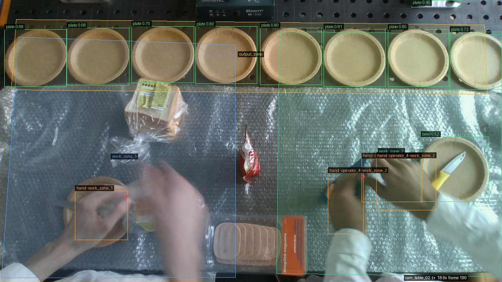
A real frame from the recording. The boxes, zones and labels were drawn by the system while it was running.
The problem
The customer asks “why does output differ”, not “who is worse”
An assembly bench runs on people. How many minutes went into cutting, when the bench stood idle, whether the roll was built in the order the tech card prescribes — nobody knows: to know it, somebody has to stand there with a stopwatch.
Watching does not scale
One technologist covers one bench for one day. A shift, let alone a shop floor, is out of reach.
A counter at the end says nothing about cause
It gives the “how many”. Not where the time went, and not what got in the way.
The tech card lives on paper
The steps and the ingredients are written down; nothing checks them against what happened.
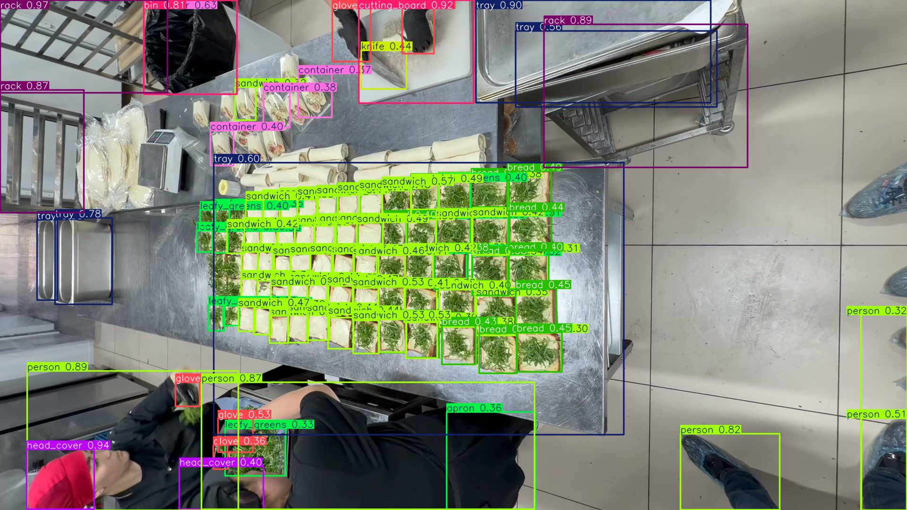
A frame from the customer’s own shop, boxes ours: the bench, the racks and the people at work.
There is no operator ranking in this project, and that is a decision rather than an omission: the customer needs the reason for the difference, not somebody to blame.
Architecture
Seven steps from a frame to an answer
Every step is a service that owns exactly one thing. One holds the camera, another runs the model, a third records — so one of them failing does not take the rest down, and the whole system comes back up in a single step.
Nothing is thrown away
The system keeps what the cameras actually saw. Zones, names, activities and counts are all worked out from that — so a rule that turns out wrong is fixed by running it again over the same recording, never by filming the shift a second time.
Every number says how sure it is
A name says where it came from — the badge, the zone the person stood in, or carried over from a moment earlier. An activity says which rule recognised it, or states plainly that none did.
Vision
Our own detector, trained on our own frames
60 classes of food, tableware and tools — bread, tomato, cheese, sausage, knife, cutting board, glove, plate, container. Trained on frames from these very cameras: public datasets do not know a bench like this seen from above.
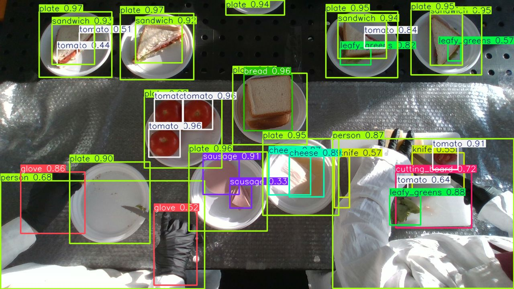
One frame of the recording: 30+ objects, each with its class and the model’s confidence.
Where it is strong and where it is not — measured
Large, separate objects: plate 0.96, cake 0.96, cutting board 0.93, person 0.90. The dense sandwich grid: bread 0.34 — a cheese slice from above is not distinguishable from bread. That is written in the report rather than buried under an average.
Identity and zones
A name comes from a marker, and it names a track — never a frame
The floor camera sees the marker and gives the name to a person’s track. The table camera sees hands. They meet on a shared zone — and that is how a hand over the bench gets an operator’s name.
Floor camera: the track keeps its name for as long as the person is in view.
Table camera: zones, and hands that already carry an operator’s name.
- An ArUco marker ~10 cm across needs 24 pixels a side while the person walks — measured on site, not taken from a paper.
- A name outlives the track: a new track within 10 s and 150 px inherits it, and the log records that the name was inherited.
- Zones are drawn by a person. The machine files its own proposals separately — they match the drawn ones at IoU 0.74–0.77.
- When two people share a zone, the moment is recorded as ambiguous, with both candidates named — instead of guessing one of them.
Activities
An activity is a rule table, not a classifier
“A knife at the hands, a vegetable at the hands, a board in the zone” is cutting. Adding an activity means editing a config, not collecting a dataset and retraining. What lies in the zone names the place; what is at the hands names the work.
Sauce work: the cup stays at the hands — the rule fires.
Assembly: bread and filling at the hands inside a work zone.
- cutting and prep 370 s
- sauce mixing 369 s
- working with a tomato 154 s
- assembly 132 s
- spreading sauce 109 s
- working with a plate 93 s
- working with a sandwich 75 s
- unnamed work 613 s
613 seconds are “unnamed work”: no rule matched. The chart labels that stretch “not visible”, not “idle” — and the 78 seconds when the table camera simply could not see the hands are marked just as plainly.
Output
A unit is a plate changing state, not a count of detections
A plate inside the output zone is a slot that is followed: empty → food on it for ten observations in a row (two seconds) = one unit. Counting detections cannot work — the same plate enters the frame fifteen times a second.
12 seconds of the take: the plate is empty → a sandwich lands on it → the counter moves.
- operator 1 — 5 sandwiches
- operator 4 — 3 sandwiches
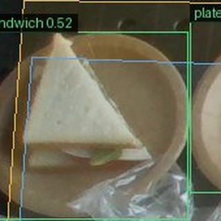
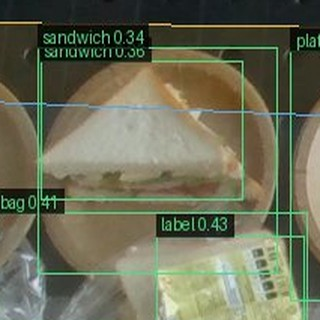
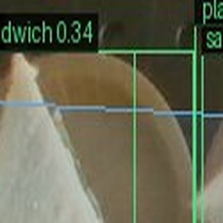
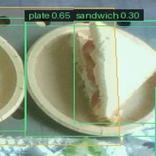
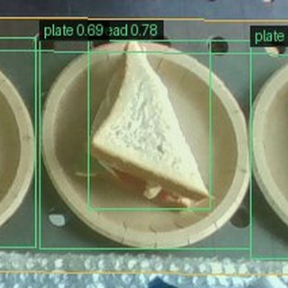
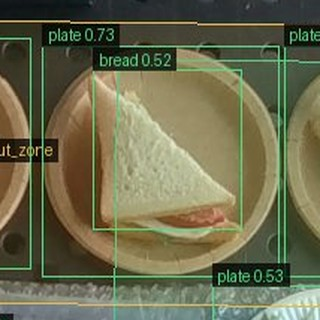
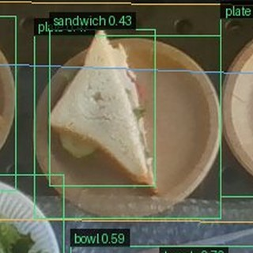
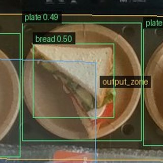
Each sandwich, cut from the frame in which it landed on its plate.
- Eight sandwiches on eight different plates, and every one of them has the frame it was counted on.
- Each one is credited by the zone its plate came from; one is also confirmed by a named hand in the output zone, which is the stronger evidence of the two.
- An earlier version of the rule counted 12: a plate covered by a hand for a second counted twice. Fixing the rule and rebuilding the same recording was enough — nothing was re-shot.
The result
A shift turns into a report nobody had to write
Everything the cameras saw becomes a short, readable record: what each person did, for how long, with what, and how much came out — with the frames that prove each line.
Rows the system wrote by itself. The last line links to the four frames where those plates were filled.
Time, not impressions
Minutes by activity and by place, per person and per bench — the same way every day, so two shifts can actually be compared.
Output with evidence
Every finished unit comes with the frame it was counted on. A number can be disputed; a number with its picture can be checked.
Questions in plain language
Anyone can ask the recording what happened, instead of scrubbing through nine minutes of video or waiting for an analyst.
It admits the gaps
Time no rule could name and units nobody can be credited with are shown as exactly that — never quietly folded into someone's total.
The same record feeds the tech-card check on the next slide and the questions after it — one recording, one set of numbers, no second version of the truth.
The assistant
One question box, two kinds of answer
What the question is about decides what runs. Ask whether someone followed the process chart and it runs the checklist on the next slide. Ask anything else and it answers from the recording itself — and hands you the moments it used, each with its frame.
Numbers in the answer are not decoration: each one opens the moment it came from.
Operator 4 held a spoon and did mixing / sauce in work zone 2.
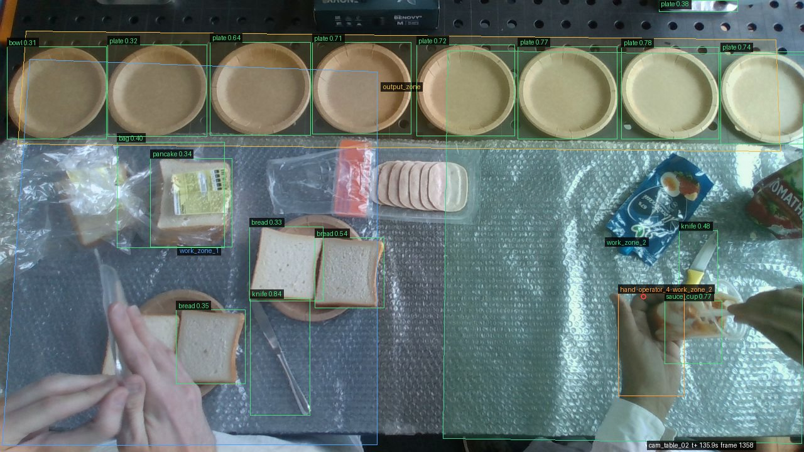
Representative moment — the frame the claim was written from.
Every answer ends the same way: “This answer covers the moments shown in the linked observations.” A search result is never presented as the full picture of a shift.
Process check
The recipe card, checked against what the cameras saw
Ask whether an operator followed the chart and the answer stops being prose: every step and every ingredient comes back with its own verdict and the moments behind it.
The recording shows 2 of 4 process steps and 4 of 7 required ingredients. The detailed results are shown below.
Process steps
Rolling is a movement of the hands, and no object stands for it in the recording.
Ingredients
Sliced bread was used at this bench, and bread does not stand in for a tortilla.
No cucumber was recorded at this operator’s hands at any point of the run.
Assessment based on 81 linked observations · the rest of the card follows below.
Two verdicts, never three
A step is observed or not; an ingredient is used or not. “Probably” is not a verdict anyone can act on.
“Not observed” is not “not done”
Thickness, weight and the order of layers cannot be read from these cameras — so the check says that in the step, instead of quietly passing or failing it.
Every line points at the footage
The numbers open the observations behind a verdict, each with its frame. Anyone can disagree with the system and see where it looked.
The whole card, in order
Every step is read against the operator’s whole run, start to finish — a step cannot be missed for not being among the closest few matches.
Real shop floor
Tested on the customer’s line, not only on a lab bench
Nine phone videos from a working shop → 1 858 frames → labelling by words (SAM 3). The zones named themselves — from what ended up at the hands, not from what happened to lie nearby.
The zone named itself weighing: cake and bowl at the hands in 74 % of frames.
One frame, two zones: cutting / prep above, assembly below.
A label at the hands makes it labelling — not merely “boxes are lying here”.
The scale display is read by a person, not by OCR
Seven segments, 55 pixels tall: a person reads 38 of 49 frames, EasyOCR 10 (it confuses 1 with 4 and 0 with 9). The system writes “unreadable” and keeps the raw OCR, instead of filling in a plausible digit.
Some things have no word at all
The dessert in its box was found by none of fifteen prompts we measured. Classes like that are labelled by a person — and the documentation says which ones.
Where it stands
What already works — in numbers
What comes next
Finish reviewing the footage from the customer’s shop → train the detector on it → move it onto the on-camera chip → fixed cameras over the real benches → the same questions over a whole shift.
Honest limits
These cameras read neither weight nor cut thickness. Cheese from above is not distinguishable from bread. The count still holds one placement too many, and only one of them is tied to a named hand. We say so up front — that is part of the result, not something the customer finds out later.
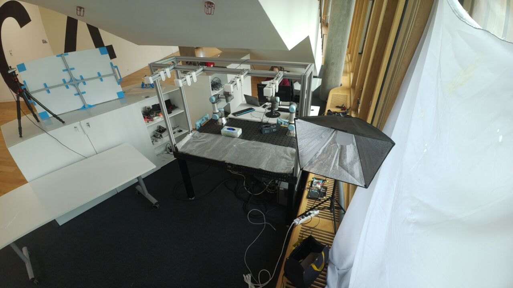
The rig this was shot on.
Everything on these slides comes from one recording and its logs: the boxes were drawn by the system while it ran, the numbers are rows it wrote. Nothing here was drawn by hand.